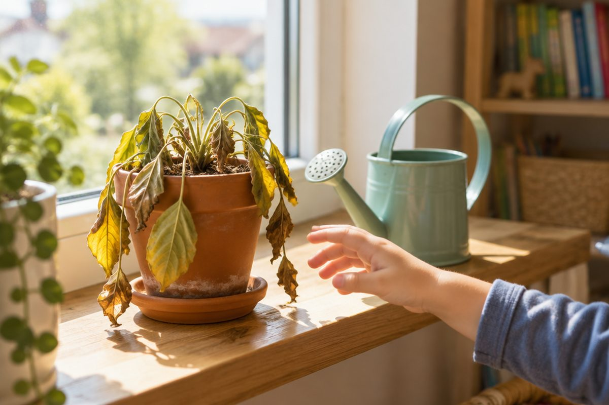

왜 그런 일이 일어났을까?

아침에 늦잠을 잤더니 학교에 지각했어요. 이렇게 어떤 일에는 그 일이 일어나게 한 까닭이 있어요. 원인과 결과를 찾으며 글을 읽으면 내용이 훨씬 잘 이해돼요.
원인과 결과란 무엇일까요?
어떤 일이 일어나게 된 까닭을 ‘원인’이라고 하고, 그 원인 때문에 생긴 일을 ‘결과’라고 해요.
원인이 먼저 일어나고, 결과는 그 뒤에 일어나요. 그래서 ‘무엇 때문에 → 어떻게 되었다’로 이어서 말할 수 있어요.
원인: 밤새 눈이 많이 내렸어요. → 결과: 길이 미끄러워졌어요.
원인과 결과를 이어 주는 말
글에서 원인과 결과는 이어 주는 말로 연결될 때가 많아요. ‘그래서’, ‘-아서/-어서’, ‘-기 때문에’ 뒤에는 결과가 와요.
‘왜냐하면’이 나오면 그 뒤에 원인이 와요. 이런 말을 찾으면 원인과 결과를 쉽게 알 수 있어요.
비가 왔어요. 그래서 소풍이 미루어졌어요. / 비가 와서 소풍이 미루어졌어요. / 소풍이 미루어졌어요. 왜냐하면 비가 왔기 때문이에요.
결과를 보고 원인을 찾아요
글을 읽을 때 어떤 일이 일어났으면 “왜 그렇게 되었을까?” 하고 질문해 보세요. 그 답이 원인이에요.
하나의 원인이 여러 결과를 낳기도 하고, 한 결과에 원인이 여러 개 있기도 해요.
결과: 화분의 식물이 시들었어요. → 왜? 원인: 일주일 동안 물을 주지 않았어요.
표로 정리하면 한눈에 보여요
설명하는 글을 읽을 때 원인과 결과를 표로 정리해 보세요. 왼쪽에 원인, 오른쪽에 결과를 쓰면 글의 내용이 한눈에 들어와요.
원인과 결과를 잘 알면 앞으로 일어날 일을 미리 생각하고 대비할 수도 있어요.
원인: 이를 잘 닦지 않아요. → 결과: 충치가 생겨요. / 원인: 운동을 꾸준히 해요. → 결과: 몸이 튼튼해져요.
핵심 낱말
- 원인
- 어떤 일이 일어나게 된 까닭
- 결과
- 어떤 까닭 때문에 생긴 일
- 그래서
- 앞의 내용이 원인이 되어 뒤의 결과가 생길 때 쓰는 이어 주는 말
- 왜냐하면
- 뒤에 앞일의 까닭(원인)을 말할 때 쓰는 말
한 줄 정리
- 원인은 어떤 일이 일어난 까닭이고, 결과는 그 때문에 생긴 일이에요.
- ‘그래서, -아서/-어서, -기 때문에’ 뒤에는 결과가, ‘왜냐하면’ 뒤에는 원인이 와요.
- “왜 그렇게 되었을까?” 하고 물으며 읽고, 표로 정리하면 원인과 결과가 잘 보여요.
학교 교육과정 연결
- [4국01-02] 원인과 결과의 관계를 고려하여 내용을 예측하며 듣고 말한다.